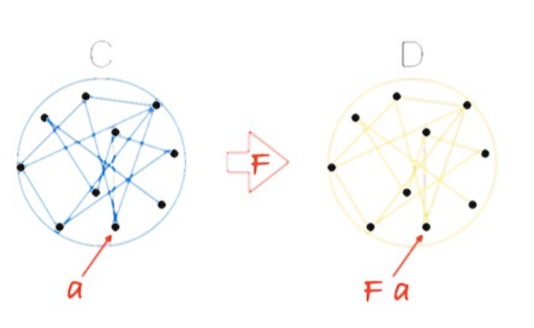
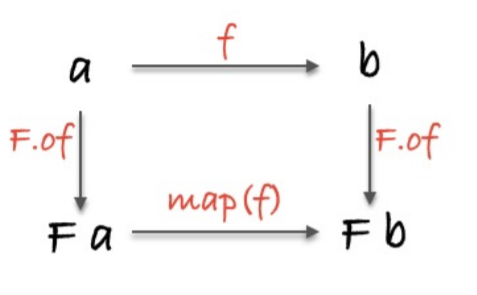
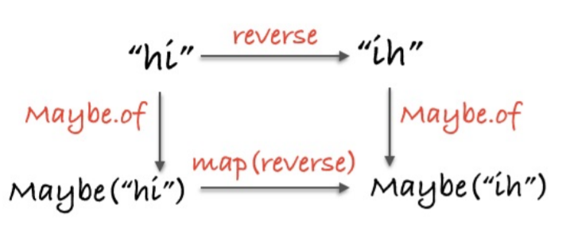

JS函数式编程
笔记里面常常依赖一些库和之前的代码，而且可能存在理论上的代码和未实现的函数，阅读时，需要仔细。
下面部分经常的东西后面经常用到，我先导入。
1 | const curry = require('lodash/curry') |
Hindley-Milner 类型签名
初识类型
刚接触函数式编程的人很容易深陷类型签名（type signatures）的泥淖。类型（type）是让所有不同背景的人都能高效沟通的元语言。很大程度上，类型签名是以 “Hindley-Milner” 系统写就的。
类型签名在写纯函数时所起的作用非常大，大到英语都不能望其项背。这些签名轻轻诉说着函数最不可告人的秘密。短短一行，就能暴露函数的行为和目的。类型签名还衍生出了 “自由定理（free theorems）” 的概念。因为类型是可以推断的，所以明确的类型签名并不是必要的；不过你完全可以写精确度很高的类型签名，也可以让它们保持通用、抽象。类型签名不但可以用于编译时检测（compile timechecks），还是最好的文档。所以类型签名在函数式编程中扮演着非常重要的角色——重要程度远远超出你的想象。
1 | // capitalize :: String -> String |
在 Hindley-Milner 系统中，函数都写成类似 a -> b 这个样子，其中 a 和 b是任意类型的变量。因此， capitalize 函数的类型签名可以理解为“一个接受String 返回 String 的函数”。换句话说，它接受一个 String 类型作为输入，并返回一个 String 类型的输出、
PS：Haskell里面HM类型签名作为类型约束语法（type constraints）是很常见的。
1 | // strLength :: String -> Number |
strLength 和 capitalize 类似：接受一个 String 然后返回一个Number 。至于其他的，第一眼看起来可能会比较疑惑。不过在还不完全了解细节的情况下，你尽可能把最后一个类型视作返回值。那么 match 函数就可以这么理解：它接受一个 Regex 和一个 String ，返回一个 [String] 。
这里有一个非常有趣的地方，对于 match 函数，我们完全可以把它的类型签名这样分组1
2
3
4// match :: Regex -> (String -> [String])
let match = curry(function(reg, s){
return s.match(reg)
})
是的，把最后两个类型包在括号里就能反映更多的信息了。现在我们可以看出match 这个函数接受一个 Regex 作为参数，返回一个从 String 到 [String] 的函数。因为 curry，造成的结果就是这样：给 match 函数一个Regex ，得到一个新函数，能够处理其 String 参数。当然了，我们并非一定要这么看待这个过程，但这样思考有助于理解为何最后一个类型是返回值。
1 | // onHoliday :: String -> [String] |
每传一个参数，就会弹出类型签名最前面的那个类型。所以 onHoliday 就是已经有了 Regex 参数的 match 。
PS：我最近刚开始学习Haskell，Haskell里面所有函数都是auto-curried的。配合HM签名效果感觉很强大。
1 | // replace :: Regex -> (String -> (String -> String)) |
但是在这段代码中，就像你看到的那样，为 replace 加上这么多括号未免有些多余。所以这里的括号是完全可以省略的，如果我们愿意，可以一次性把所有的参数都传进来；所以，一种更简单的思路是： replace 接受三个参数，分别是 Regex 、 String 和另一个 String ，返回的还是一个 String 。
1 | // id :: a -> a |
这里的 id 函数接受任意类型的 a 并返回同一个类型的数据。和普通代码一样，我们也可以在类型签名中使用变量。把变量命名为 a 和 b 只是一种约定俗成的习惯，你可以使用任何你喜欢的名称。对于相同的变量名，其类型也一定相同。这是非常重要的一个原则，所以我们必须重申： a -> b 可以是从任意类型的 a 到任意类型的 b ，但是 a -> a 必须是同一个类型。例如， id 可以是 String -> String ，也可以是 Number -> Number ，但不能是 String -> Bool 。
相似地， map 也使用了变量，只不过这里的 b 可能与 a 类型相同，也可能不相同。我们可以这么理解： map 接受两个参数，第一个是从任意类型 a 到任意类型 b 的函数；第二个是一个数组，元素是任意类型的 a ； map 最后返回的是一个类型 b 的数组。
辨别类型和它们的含义是一项重要的技能，这项技能可以让你在函数式编程的路上走得更远。不仅论文、博客和文档等更易理解，类型签名本身也基本上能够告诉你它的函数性（functionality）。要成为一个能够熟练读懂类型签名的人，你得勤于练习；不过一旦掌握了这项技能，你将会受益无穷，不读手册也能获取大量信息。
1 | // head :: [a] -> a |
注意看 reduce 的签名，可以看到它的第一个参数是个函数，这个函数接受一个 b 和一个 a 并返回一个 b 。那么这些 a 和 b 是从哪来的呢？很简单，签名中的第二个和第三个参数就是 b 和元素为 a 的数组，所以唯一合理的假设就是这里的 b 和每一个 a 都将传给前面说的函数作为参数。我们还可以看到， reduce 函数最后返回的结果是一个b ，也就是说， reduce 的第一个参数函数的输出就是 reduce 函数的输出。知道了 reduce 的含义，我们才敢说上面关于类型签名的推理是正确的。
1 | console.log(reduce((b, a) => a * b)(3)([1, 2, 3])) |
缩小可能性范围
一旦引入一个类型变量，就会出现一个奇怪的特性叫做 parametricity（http://en.wikipedia.org/wiki/Parametricity ）。这个特性表明，函数将会以一种统一的行为作用于所有的类型。
a 告诉我们它不是一个特定的类型，这意味着它可以是任意类型；那么我们的函数对每一个可能的类型的操作都必须保持统一。这就是 parametricity 的含义。
这种“可能性范围的缩小”（narrowing of possibility）允许我们利用类似 Hoogle 这样的类型签名搜索引擎去搜索我们想要的函数。类型签名所能包含的信息量真的非常大。
PS: Hoogle是Haskell官网中搜索文档的搜索引擎。
自由定理
类型签名除了能够帮助我们推断函数可能的实现，还能够给我们带来自由定理（free theorems）。1
2
3
4// head :: [a] -> a
compose(f, head) == compose(head, map(f));
// filter :: (a -> Bool) -> [a] -> [a]
compose(map(f), filter(compose(p, f))) == compose(filter(p), map(f));
不用写一行代码你也能理解这些定理，它们直接来自于类型本身。
PS: 这些函数是纯的才能成立。
第一个例子中，等式左边说的是，先获取数组的第一个元素，然后对它调用函数 f ；等式右边说的是，先对数组中的每一个元素调用 f ，然后再取其返回结果的头部 。这两个表达式的作用是相等的，但是前者要快得多。
第二个例子 filter 也是一样。等式左边是说，先组合 f 和 p 检查哪些元素要过滤掉，然后再通过 map 实际调用 f （别忘了 filter 是不会改变数组中元素的，这就保证了 a 将保持不变）；等式右边是说，先用 map 调用 f ，然后再根据 p 过滤元素。这两者也是相等的。
类型约束
最后要注意的一点是，签名也可以把类型约束为一个特定的接口（interface）。
1 | // sort :: Ord a => [a] -> [a] |
胖箭头左边表明的是这样一个事实： a 一定是个 Ord 对象。也就是说， a 必须要实现 Ord 接口。 Ord 到底是什么？它是从哪来的？在一门强类型语言中，它可能就是一个自定义的接口，能够让不同的值排序。通过这种方式，我们不仅能够获取关于 a 的更多信息，了解 sort 函数具体要干什么，而且还能限制函数的作用范围。我们把这种接口声明叫做类型约束（type constraints）。
PS：Haskell里面存在Ord类型类，Rust里面也有类似的东西。
1 | // assertEqual :: (Eq a, Show a) => a -> a -> Assertion |
总结
Hindley-Milner 类型签名在函数式编程中无处不在，它们简单易读，写起来也不复杂。但仅仅凭签名就能理解整个程序还是有一定难度的，要想精通这个技能就更需要花点时间了。
特百惠
强大的容器
我们已经知道如何书写函数式的程序了，即通过管道把数据在一系列纯函数间传递的程序。我们也知道了，这些程序就是声明式的行为规范。但是，控制流（control flow）、异常处理（error handling）、异步操作（asynchronous actions）和状态（state）呢？还有更棘手的作用（effects）呢？
首先我们将创建一个容器（container）。这个容器必须能够装载任意类型的值。这个容器将会是一个对象，但我们不会为它添加面向对象观念下的属性和方法。
1 | let Container = function(x) { |
我们将使用 Container.of 作为构造器（constructor），这样就不用到处去写糟糕的 new 关键字了，非常省心。 实际上不能这么简单地看待 of 函数，但暂时先认为它是把值放到容器里的一种方式。
1 | Container.of(3) |
在继续后面的内容之前，先澄清几点：
Container 是个只有一个属性的对象。尽管容器可以有不止一个的属性，但大多数容器还是只有一个。我们很随意地把 Container 的这个属性命名为 value。value 不能是某个特定的类型，不然 Container 就对不起它这个名字了。数据一旦存放到 Container ，就会一直待在那儿。我们可以用 .__value 获取到数据，但这样做有悖初衷。
第一个 functor(函子)
一旦容器里有了值，不管这个值是什么，我们就需要一种方法来让别的函数能够操作它。
1 | // (a -> b) -> Container a -> Container b |
为什么要使用这样一种方法？因为我们能够在不离开 Container 的情况下操作容器里面的值。这是非常了不起的一件事情。 Container 里的值传递给 map 函数之后，就可以任我们操作；操作结束后，为了防止意外再把它放回它所属的 Container。这样做的结果是，我们能连续地调用 map ，运行任何我们想运行的函数，甚至还可以改变值的类型。
如果我们能一直调用 map ，那它不就是个组合（composition）么！这里边是有什么数学魔法在起作用？是 functor。各位，这个数学魔法就是 functor。
functor 是实现了 map 函数并遵守一些特定规则的容器类型。
没错，functor 就是一个签了合约的接口。functor 是范畴学里的概念。
把值装进一个容器，而且只能使用 map 来处理它，这么做的理由到底是什么呢？如果我们换种方式来问，答案就很明显了：让容器自己去运用函数能给我们带来什么好处？答案是抽象，对于函数运用的抽象。当 map 一个函数的时候，我们请求容器来运行这个函数。不夸张地讲，这是一种十分强大的理念。
薛定谔的 Maybe
说实话 Container 挺无聊的，而且通常我们称它为 Identity ，与 id 函数的作用相同（这里也是有数学上的联系的）。除此之外，还有另外一种 functor，那就是实现了 map 函数的类似容器的数据类型，这种 functor 在调用 map 的时候能够提供非常有用的行为。现在让我们来定义一个这样的 functor。
1 | let Maybe = function(x) { |
Maybe 会先检查自己的值是否为空，然后才调用传进来的函数。这样我们在使用 map 的时候就能避免恼人的空值了（这个实现出于教学目的做了简化）。
1 | console.log(Maybe.of('Malkovich Malkovich').map(match(/a/ig))) |
当传给 map 的值是 null 时，代码并没有爆出错误。这是因为每一次 Maybe 要调用函数的时候，都会先检查它自己的值是否为空。
这种点记法（dot notation syntax）已经足够函数式了，但是正如在第 1 部分指出的那样，我们更想保持一种 pointfree 的风格。碰巧的是， map 完全有能力以 curry 函数的方式来“代理”任何 functor。
1 | // map :: Functor f => (a -> b) -> f a -> f b |
这样我们就可以像平常一样使用组合，同时也能正常使用 map 了，非常振奋人心。ramda 的 map 也是这样。后面的，我们将在点记法更有教育意义的时候使用点记法，在方便使用 pointfree 模式的时候就用 pointfree。你注意到了么？我在类型标签中偷偷引入了一个额外的标记： Functor f => 。这个标记告诉我们 f 必须是一个 functor。
用例
1 | // safeHead :: [a] -> Maybe(a) |
safeHead 与一般的 _.head 类似，但是增加了类型安全保证。引入 Maybe 会发生一件非常有意思的事情，那就是我们被迫要与狡猾的 null 打交道了。 safeHead 函数能够诚实地预告它可能的失败,然后返回一个 Maybe 来通知我们相关信息。实际上不仅仅是通知，因为毕竟我们想要的值深藏在 Maybe 对象中，而且只能通过 map 来操作它。本质上，这是一种由 safeHead 强制执行的空值检查。 类似这样的 API 能够把一个像纸糊起来的、脆弱的应用升级为实实在在的、健壮的应用，这样的 API 保证了更加安全的软件。
有时候函数可以明确返回一个 Maybe(null) 来表明失败
1 | // withdraw :: Number -> Account -> Maybe(Account) |
withdraw 也显示出了它的多变性，使得我们后续的操作只能用 map 来进行。这个例子与前面例子不同的地方在于，这里的 null 是有意的。我们不用 Maybe(String) ，而是用 Maybe(null)来发送失败的信号，这样程序在收到信号后就能立刻停止执行。这一点很重要：如果 withdraw 失败了，map 就会切断后续代码的执行，因为它根本就不会运行传递给它的函数，即finishTransaction 。这正是预期的效果：如果取款失败，我们并不想更新或者显示账户余额。
释放容器里的值
人们经常忽略的一个事实是：任何事物都有个最终尽头。那些会产生作用的函数，不管它们是发送 JSON 数据，还是在屏幕上打印东西，还是更改文件系统，还是别的什么，都要有一个结束。但是我们无法通过 return 把输出传递到外部世界，必须要运行这样或那样的函数才能传递出去。
应用程序所做的工作就是获取、更改和保存数据直到不再需要它们，对数据做这些操作的函数有可能被 map 调用，这样的话数据就可以不用离开它温暖舒适的容器。讽刺的是，有一种常见的错误就是试图以各种方法删除 Maybe 里的值，好像这个不确定的值是魔鬼，删除它就能让它突然显形，然后一切罪恶都会得到宽恕似的（此处原文应该是源自圣经）。要知道，我们的值没有完成它的使命，很有可能是其他代码分支造成的。我们的代码，就像薛定谔的猫一样，在某个特定的时间点有两种状态，而且应该保持这种状况不变直到最后一个函数为止。这样，哪怕代码有很多逻辑性的分支，也能保证一种线性的工作流。
不过，对容器里的值来说，还是有个逃生口可以出去。也就是说，如果我们想返回一个自定义的值然后还能继续执行后面的代码的话，是可以做到的；要达到这一目的，可以借助一个帮助函数 maybe ：
1 | // maybe :: b -> (a -> b) -> Maybe a -> b |
这样就可以要么返回一个静态值（与 finishTransaction 返回值的类型一致），要么继续愉快地在没有 Maybe 的情况下完成交易。 maybe 使我们得以避免普通 map 那种命令式的 if/else 语句： if(x !== null) { return f(x) } 。
引入 Maybe 可能会在初期造成一些不适。Swift 和 Scala 用户知道我在说什么，因为这两门语言的核心库里就有 Maybe 的概念，只不过伪装成 Option(al) 罢了。
PS：Haskell 里面有Maybe，Rust里面也是类似伪装成 Option。
被迫在任何情况下都进行空值检查，的确让大部分人头疼不已。然而随着时间推移，空值检查会成为第二本能，不管怎么说，空值检查大多数时候都能防止在代码逻辑上偷工减料，让我们脱离危险。
Maybe 能够非常有效地帮助我们增加函数的安全性。
有一点我必须要提及，否则就太不负责任了，那就是 Maybe 的“真正”实现会把它分为两种类型：一种是非空值，另一种是空值。这种实现允许我们遵守 map 的 parametricity 特性，因此 null 和 undefined 能够依然被 map 调用，functor 里的值所需的那种普遍性条件也能得到满足。所以你会经常看到 Some(x) / None 或者 Just(x) / Nothing 这样的容器类型在做空值检查，而不是Maybe 。
“纯”错误处理
说出来可能会让你震惊， throw/catch 并不十分“纯”。当一个错误抛出的时候，我们没有收到返回值，反而是得到了一个警告！
有了 Either 这个新朋友，我们就能以一种好得多的方式来处理错误，那就是返回一条非常礼貌的消息作为回应。
1 | let Left = function(x) { |
Left 就像是青春期少年那样无视我们要 map 它的请求。 Right 的作用就像是一个 Container （也就是 Identity）。这里强大的地方在于， Left 有能力在它内部嵌入一个错误消息。
假设有一个可能会失败的函数，就拿根据生日计算年龄来说好了。的确，我们可以用 Maybe(null) 来表示失败并把程序引向另一个分支，但是这并没有告诉我们太多信息。很有可能我们想知道失败的原因是什么。
1 | let getAge = curry(function(now, user) { |
这么一来，就像 Maybe(null) ，当返回一个 Left 的时候就直接让程序短路。跟 Maybe(null) 不同的是，现在我们对程序为何脱离原先轨道至少有了一点头绪。有一件事要注意，这里返回的是 Either(String, Number) ，意味着我们这个 Either 左边Left的值是 String，右边Right，也就是正确的值，是 Number 。这个类型签名不是很正式，因为我们并没有定义一个真正的 Either父类；但我们还是从这个类型那里了解到不少东西。它告诉我们，我们得到的要么是一条错误消息，要么就是正确的值。
PS：Rust里面也有类似的概念，对应于Result enum里的Ok，Err。
1 | // map 如之前所实现，会调用container的map方法 |
如果 birthdate 合法，这个程序就会把它神秘的命运打印在屏幕上让我们见证；如果不合法，我们就会收到一个有着清清楚楚的错误消息的 Left ，尽管这个消息是稳稳当当地待在它的容器里的。这种行为就像，虽然我们在抛错，但是是以一种平静温和的方式抛错，而不是像一个小孩子那样，有什么不对劲就闹脾气大喊大叫。
我们根据 birthdate 的合法性来控制代码的逻辑分支，同时又让代码进行从右到左的直线运动，而不用爬过各种条件语句的大括号。
我们在 Right 分支的类型签名中使用 _ 表示一个应该忽略的值（在有些浏览器中，你必须要 console.log.bind(console) 才能把 console.log 当作一等公民使用）。
这个例子中，尽管 fortune 使用了 Either ，它对每一个 functor 到底要干什么却是毫不知情的。通俗点来讲，一个函数在调用的时候，如果被map 包裹了，那么它就会从一个非 functor 函数转换为一个 functor 函数。我们把这个过程叫做 lift。
一般情况下，普通函数更适合操作普通的数据类型而不是容器类型，在必要的时候再通过 lift 变为合适的容器去操作容器类型。这样做的好处是能得到更简单、重用性更高的函数，它们能够随需求而变，兼容任意 functor。
Either 并不仅仅只对合法性检查这种一般性的错误作用非凡，对一些更严重的、能够中断程序执行的错误比如文件丢失或者 socket 连接断开等， Either 同样效果显著。
它的能耐远不止于此。比如，它表示了逻辑或（也就是||）。再比如，它体现了范畴学里 coproduct 的概念。还比如，它是标准的 sum type（或者叫不交并集，disjoint union of sets），因为它含有的所有可能的值的总数就是它包含的那两种类型的总数。
Either 能做的事情多着呢，但是作为一个 functor，我们就用它处理错误。
就像 Maybe 可以有个 maybe 一样， Either 也可以有一个 either 。两者的用法类似，但 either 接受两个函数（而不是一个）和一个静态值为参数。这两个函数的返回值类型一致：
1 | let either = curry(function(f, g, e) { |
要是我们没把 getFromStorage 包在另一个函数里，它的输出值就是不定的，会随外部环境变化而变化。有了这个结实的包裹函数（wrapper），同一个输入就总能返回同一个输出：一个从 localStorage 里取出某个特定的元素的函数。
然而，这并没有多大的用处。就像是你收藏的全新未拆封的玩偶，不能拿出来玩有什么意思。所以要是能有办法进到这个容器里面，拿到它藏在那儿的东西就好了…办法是有的，请看 IO。
1 | let IO = function(f) { |
IO 跟之前的 functor 不同的地方在于，它的 __value 总是一个函数。不过我们不把它当作一个函数——实现的细节我们最好先不管。这里发生的事情跟我们在getFromStorage 那里看到的一模一样： IO 把非纯执行动作（impure action）捕获到包裹函数里，目的是延迟执行这个非纯动作。就这一点而言，我们认为 IO 包含的是被包裹的执行动作的返回值，而不是包裹函数本身。
这在 of 函数里很明显： IO(function(){ return x }) 仅仅是为了延迟执行，其实我们得到的是 IO(x) 。
1 | let io_window = new IO(function() { |
这里， io_window 是一个真正的 IO ，我们可以直接对它使用 map 。我把这里的返回值都写成了概念性的，这样就更加直观；不过实际的返回值是 { __value: [Function] } 。当调用 IO 的 map 的时候，我们把传进来的函数放在了 map 函数里的组合的最末端（也就是最左边），反过来这个函数就成为了新的 IO 的新 value ，并继续下去。传给 map 的函数并没有运行，我们只是把它们压到一个“运行栈”的最末端而已，一个函数紧挨着另一个函数，就像小心摆放的多米诺骨牌一样，让人不敢轻易推倒。这种情形很容易叫人联想起“四人帮”（《设计模式》一书作者）提出的命令模式（command pattern）或者队列（queue）。
IO 的 value 并不是它包含的值，也不是像两个下划线暗示那样是一个私有属性。value 是手榴弹的弹栓，只应该被调用者以最公开的方式拉动。为了提醒用户它的变化无常，我们把它重命名为 unsafePerformIO 看看
1 | let IO = function(f) { |
现在调用的代码对于应用程序的用户简直就直白得不能再直白了。
之后我们将学习一种跟 IO 在精神上相似，但是用法上又千差万别的类型。
异步任务
处理异步代码，我们有一种更好的方式，它的名字以“F”开头。这种方式的内部机制过于复杂，复杂得哪怕我唾沫横飞也很难讲清楚。所以我们就直接用 Quildreen Motta 的 Folktale 里的 Data.Task。
1 | const Folktale = require('folktale') |
例子中的 reject 和 result 函数分别是失败和成功的回调。正如你看到的，我们只是简单地调用 Task 的 map 函数，就能操作将来的值，好像这个值就在那儿似的。
如果熟悉 promise 的话，你该能认出来 map 就是 then ， Task 就是一个promise。
与 IO 类似， Task 在我们给它绿灯之前是不会运行的。事实上，正因为它要等我们的命令， IO 实际就被纳入到了 Task 名下，代表所有的异步操作—— readFile 和 getJSON 并不需要一个额外的 IO 容器来变纯。更重要的是，当我们调用它的 map 的时候， Task 工作的方式与 IO 几无差别：都是把对未来的操作的指示放在一个时间胶囊里，就像家务列表（chore chart）那样——
真是一种精密的拖延术。
我们必须调用 fork 方法才能运行 Task ，这种机制与 unsafePerformIO 类似。但也有不同，不同之处就像 fork 这个名称表明的那样，它会 fork 一个子进程运行它接收到的参数代码，其他部分的执行不受影响，主线程也不会阻塞。当然这种效果也可以用其他一些技术比如线程实现，但这里的这种方法工作起来就像是一个普通的异步调用，而且 event loop 能够不受影响地继续运转。
1 | // Pure application |
调用 fork 之后， Task 就赶紧跑去找一些文章，渲染到页面上。与此同时，我们在页面上展示一个 spinner，因为 fork 不会等收到响应了才执行它后面的代码。最后，我们要么把文章展示在页面上，要么就显示一个出错信息，视getJSON 请求是否成功而定。
我们只需要从下读到上，从右读到左就能理解代码，即便这段程序实际上会在执行过程中到处跳来跳去。这种方式使得阅读和理解应用程序的代码比那种要在各种回调和错误处理代码块之间跳跃的方式容易得多。
一点理论
functor 的概念来自于范畴学，并满足一些定律。
1 | // identity |
同一律很简单，但是也很重要。因为这些定律都是可运行的代码，所以我们完全可以在我们自己的 functor 上试验它们，验证它们是否成立。
在范畴学中，functor 接受一个范畴的对象和态射（morphism），然后把它们映射（map）到另一个范畴里去。根据定义，这个新范畴一定会有一个单位元（identity），也一定能够组合态射；我们无须验证这一点，前面提到的定律保证这些东西会在映射后得到保留。
可以把范畴想象成一个有着多个对象的网络，对象之间靠态射连接。那么 functor 可以把一个范畴映射到另外一个，而且不会破坏原有的网络。如果一个对象 a 属于源范畴 C ，那么通过 functor F 把 a 映射到目标范畴 D 上之后，就可以使用 F a 来指代 a 对象。

比如， Maybe 就把类型和函数的范畴映射到这样一个范畴：即每个对象都有可能不存在，每个态射都有空值检查的范畴。这个结果在代码中的实现方式是用 map 包裹每一个函数，用 functor 包裹每一个类型。这样就能保证每个普通的类型和函数都能在新环境下继续使用组合。
从技术上讲，代码中的 functor 实际上是把范畴映射到了一个包含类型和函数的子范畴（sub category）上，使得这些 functor 成为了一种新的特殊的 endofunctor。可以用一张图来表示这种态射及其对象的映射。

这张图除了能表示态射借助 functor F 完成从一个范畴到另一个范畴的映射之外，我们发现它还符合交换律，也就是说，顺着箭头的方向往前，形成的每一个路径都指向同一个结果。不同的路径意味着不同的行为，但最终都会得到同一个数据类型。这种形式化给了我们原则性的方式去思考代码——无须分析和评估每一个单独的场景，只管可以大胆地应用公式即可。
1 | // topRoute :: String -> Maybe(String) |

根据所有 functor 都有的特性，我们可以立即理解代码，重构代码。
functor 也能嵌套使用
1 | let nested = Task.of([Right.of("pillows"), Left.of("no sleep for you")]); |
nested 是一个将来的数组，数组的元素有可能是程序抛出的错误。我们使用map 剥开每一层的嵌套，然后对数组的元素调用传递进去的函数。可以看到，这中间没有回调、 if/else 语句和 for 循环，只有一个明确的上下文。的确，我们必须要 map(map(map(f))) 才能最终运行函数。不想这么做的话，可以组合 functor。
1 | let Compose = function(f_g_x) { |
functor 组合是符合结合律的，而且之前我们定义的 Container 实际上是一个叫 Identity 的 functor。identity 和可结合的组合也能产生一个范畴，这个特殊的范畴的对象是其他范畴，态射是 functor。
总结
我们已经认识了几个不同的 functor，但它们的数量其实是无限的。有一些值得注意的可迭代数据类型（iterable data structure）我们没有介绍，像 tree、list、map 和 pair 等，以及所有你能说出来的。eventstream 和 observable 也都是 functor。其他的 functor 可能就是拿来做封装或者仅仅是模拟类型。我们身边到处都有 functor的身影。
用多个 functor 参数调用一个函数怎么样呢？处理一个由不纯的或者异步的操作组成的有序序列怎么样呢？要应对这个什么都装在盒子里的世界，目前我们工具箱里的工具还不全。下一章，我们将直奔 monad 而去。
自我总结
PS里面是自己的话。
这部分的其实还有挺多的东西没有搞懂，书中许多代码其实是无法运行的，或者依赖很多编写成本很大。书里面还有一些题目，我也没有花时间进去。个人觉得这本书比一般的函数式书要深入，当然估计在Haskell书里，这些知识都很常规。其他的东西大部分都是书中的内容，我自己进行了少量地修改和较多地删减。
最近在学习Rust和Haskell，打算寒假精力主要放在学习这2门语言特有的特性，说白了，就是安全性和函数式。
但是这2门语言门槛其实都不低，2018年平时可能会投入一些精力去学习。寒假如果顺利，希望能用这些语言来复习数据结构的知识。
下个学期特意选了一些偏实战专业课，打算把新学到的语言、特性和思想用起来。
这本书最后还有2章，如果有机会，想在寒假看完。